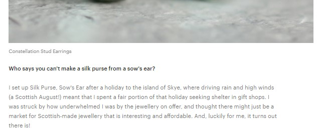
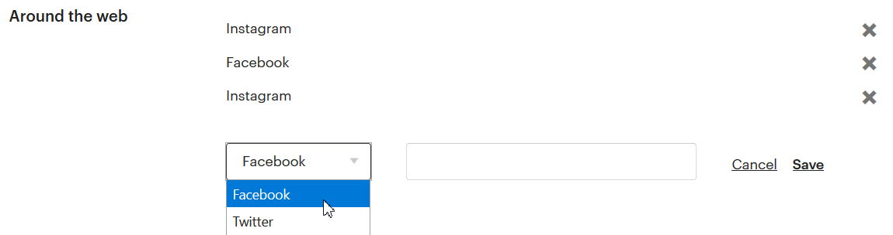
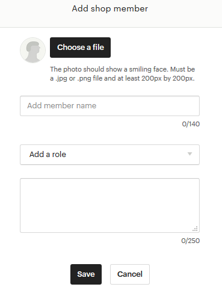
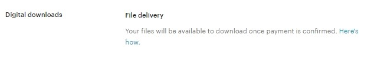
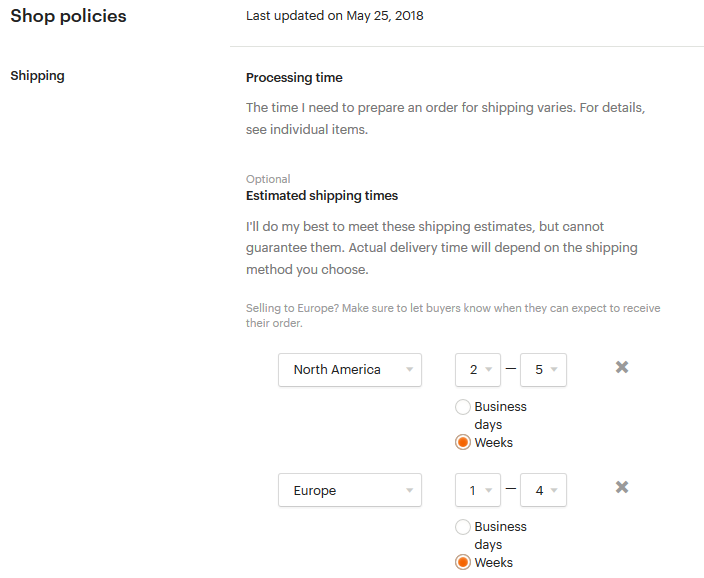
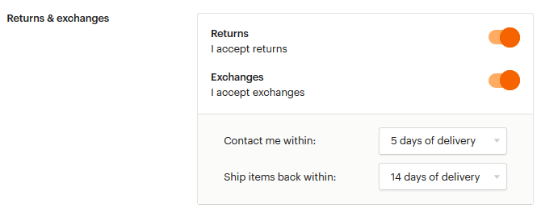
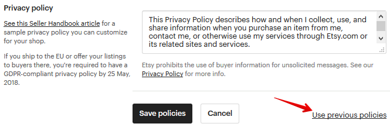
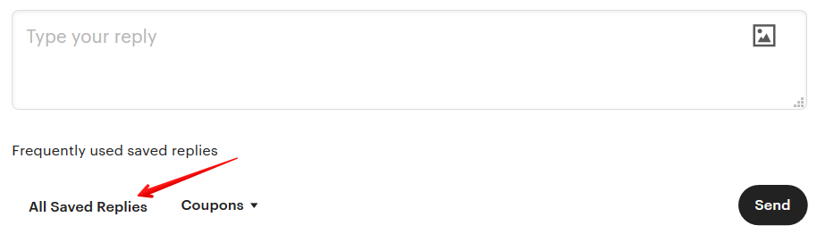

информации вы предоставите, тем больший интерес появится у ваших покупа-
телей. Подойдите творчески к этому заданию, пусть эта история не будет ана-
логом резюме, которое мы готовим для собеседования на работу.
Ссылки на ваши профили в социальных сетях
Если вы ведете аккаунт в Инстаграм или Фейсбук или у вас есть свой личный
сайт или блог, где вы рассказываете любопытные вещи и публикуете фотогра-
фии своих работ – смело добавляйте ссылки в раздел Around the web.
У меня есть несколько магазинов, за которыми я слежу с огромным любопыт-
ством в Инстаграм. И именно благодаря этой соц.сети я прониклась их подхо-
дом до такой степени, что совершила покупки в их магазинах на Этси.
Команда
Обязательно укажите в разделе Shop members партнеров, фотографов, моделей
и других постоянных участников магазина, с кем вы сотрудничаете. Загрузите
личное фото каждого, а также расскажите несколько фактов о них. Например,


ваш фотограф самый веселый и на каждой фотосессии рассказывает по не-
сколько новых анекдотов.
Местные ярмарки
Если в ближайшее время вы планируете стать участником ярмарок или выста-
вок, можете добавить об этом информацию в разделе Local. Вдруг кто-то из ва-
ших будущих покупателей захочет прийти к вам в гости за покупкой.
Если вы не нашли это мероприятие на карте, добавьте его сами, нажав кнопку
Create an Event.
А затем введите вручную название, даты, адрес и описание.

Мне кажется, что такая социальная активность магазина выгодно подчеркивает
его преимущества в глазах посетителей и клиентов.
Как заполнить Shop policies
Правила магазина – один из самых важных разделов магазина. Чем понятнее
вы расскажите о своих правилах и условиях работы, тем меньше вопросов воз-
никнет у покупателя.
У всех продавцов есть возможность заполнить стандартную форму правил, вос-
пользовавшись настройками по умолчанию.
Например, вы можете указать примерные сроки доставки в различные страны
или части света.



Для покупателей цифровых товаров указана информация по умолчанию – файл
для скачивания будет доступен сразу после оплаты.
В разделе Payment options у вас будут указаны те способы оплаты, которые до-
ступны именно в вашем магазине.
Я из России и мне доступен только PayPal.



Если в вашем магазине есть способ приема оплаты Etsy Payments, то у вас будут
дополнительные иконки.
Отмена заказов и возвраты
Вы можете выставить с помощью переключателей те возможности, которые до-
ступны в вашем магазине (Return – возвраты, Exchanges – обмен товара), а
также установить нужный период времени.
Я выставила 5 дней с момента получения заказа, чтобы покупатель со мной свя-
зался, 14 дней на возврат (именно такой срок установлен Евросоюзом в дерек-
тиве 2011/83/EU о правах потребителя для своих покупателей) и 12 часов —
чтобы покупатель мог отменить свой заказ после оплаты.
Товары, которые не подлежат возврату The following items can’t be returned or
exchanged также остаются на ваше усмотрение.

Privacy Policy – конфиденциальность личных данных
Необходимо заполнить данный раздел, если вы продаёте товары жителям Ев-
росоюза (или сами живёте в одной из стран ЕС). Это обязательное требование
в связи с введением GDPR – регламента о защите персональных данных жите-
лей Евросоюза.
Текст для данного раздела вы можете найти в бонусном файле «Пример Privacy
Policy GDPR для Etsy».
После того, как вы ввели все параметры, сохраните изменения кнопкой Save
policies.
Если при сохранении правил Etsy показывает ошибку – попробуйте сначала
сохранить их с незаполненным разделом Privacy Policy. Если всё получится –
отредактируйте его и внесите нужный текст.
Можно ли написать свой текст в Policies
Магазины, открытые до 5 апреля 2016 года, имеют возможность публикации не
только стандартных, автоматических правил, но и расширенных, подробных.
Чтобы переключиться на них, вам нужно спуститься в самый низ Shop policies (в
режиме редактирования правил) и нажать на ссылку Use previous policies.



Затем у вас скорее всего появится вот такое диалоговое окно, в котором нужно
нажать кнопку Ok.
И теперь перепроверьте, какой формат у вас стал отображаться. Я вижу у себя
расширенные правила.
Если вы регистрировали магазин после 5 апреля 2016 года, тогда вам доступен
только стандартный, автоматический формат.


Как заполнить раздел часто задаваемых вопросов (FAQs)
Еще один раздел, который относится к Policies, но в тоже время является само-
стоятельным и отображается под описанием каждого листинга – часто задава-
емые вопросы (Frequently asked questions или FAQs).
Если вы хотите рассказать покупателям о дополнительных возможностях и пра-
вилах вашего магазина, внесите эту информацию в раздел More information.
Вы можете использовать стандартные вопросы или создать базу своих. Для
этого нажмите +Add an FAQ и выберите в выпадающем списке нужный вопрос,
а в появившемся поле напишите ответ.
Пункт Custom в нижней строке выпадающего меню означает, что вы самостоя-
тельно вводите как вопрос, так и ответ.


Как создать шаблоны сообщений для покупателей
Чем больше заказов становится, тем чаще мы общаемся с покупателями. Но,
обычно, это какие-то стандартные фразы: заказ отправлен, получен ли заказ,
понравился ли товар и т.п.
На Etsy можно упростить переписку с клиентами и сохранить часто используе-
мые фразы как шаблоны.
Чтобы создать шаблон для личной переписки (раздел Messages), откройте лю-
бой диалог, прокрутите страницу вниз, напишите текст сообщения и нажмите
левую нижнюю кнопку All Saved Replies.
После этого вы можете выбрать один из готовых шаблонов ответов, которые
подготовили Etsy, или создать свой собственный (для этого нажмите Add new –
Saved Reply).
После этого введите название шаблона, текст сообщения и категорию, к кото-
рой хотите отнести данный ответ.


Теперь, когда вам понадобится быстро написать сообщение покупателю, снова
нажмите кнопку All Saved Replies и выберите нужный ответ – он подставится в
то место текста, где стоит курсор.
Здесь же будут показываться часто используемые шаблоны ответов, на которые
можно кликнуть сразу.
Чтобы отредактировать какой-то шаблон, снова перейдите к списку готовых от-
ветов с помощью кнопки All Saved Replies. Если вы хотите удалить шаблон, то
нажмите на иконку с корзиной. А чтобы изменить текст или название – клик-
ните на значок карандаша.